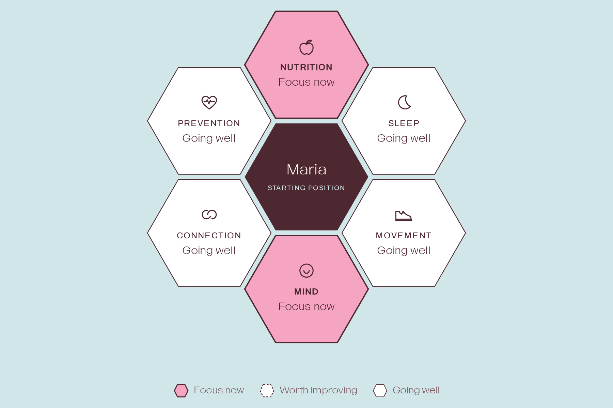

01
Starting Position
A free evaluation shows where you are today across the six dimensions.

The Good Span is a human-guided, habit-driven longevity membership that brings together science, human guidance, technology and the people you share it with.
Start with a free personal evaluation across six connected dimensions: nutrition, sleep, movement, mind, connection and prevention.
Discover your Good Span, a personalised six-month longevity journey that starts with practices chosen for you and evolves as you progress.
Meet your Pilot, a trained human longevity guide, to review your Good Span and choose together the membership that suits you best.


A free evaluation shows where you are today across the six dimensions.

You start with science-backed practices, chosen for your goals and daily life.
Each month, you check how each practice is going and decide whether to keep it, build on it, change it or replace it.

After six months, you see what has changed and choose where to focus next.
Connection is at the heart of The Good Span. Strong, meaningful relationships are linked to longer, healthier lives, yet they’re often overlooked when we think about healthy ageing. That’s why Connection is one of our six dimensions and part of being a member.
We introduce members who have something meaningful in common, such as an interest, a goal, a city or a shared experience, and create opportunities to connect through Longevity Live, activities and local gatherings.
You can also join together, as a parent and child, a family, friends or colleagues, each with your own Good Span and sharing the journey.

Build a six-month Good Span around what matters most to you, with practices that fit your life and change as you progress. Your Pilot, a trained human longevity guide, is there from your first conversation, and you choose how much ongoing guidance you’d like.
Step one
Begin with a free personal evaluation of your habits, priorities and everyday life across six connected dimensions: nutrition, sleep, movement, mind, connection and prevention.
Tell us what’s already working, what you’d like to improve and how much time you have. You’ll receive your Starting Position: a clear picture of your strengths, your opportunities and where it makes sense to start.
Step two
Your Good Span begins with a small number of science-backed practices, chosen around your goals, current habits and available time. Some help you build something new, while others strengthen what you already do or help you do it more consistently.
Step three
Your six-month Good Span begins with a welcome call with your Pilot, who helps you put it into practice. Together, you review your Starting Position, talk through your recommended practices and refine them around your goals, available time and everyday life.
Ask questions, raise anything that doesn’t feel right, and agree on practices that feel realistic for you.

Step four
Your Good Span changes as you put it into practice. Each month, look at what’s working, what feels difficult and what needs to change. For each practice, you can:
Step five
After your welcome call, choose how much human guidance you want, from focused conversations with your Pilot when you need them to regular support throughout your Good Span.
Your Pilot helps you make sense of what’s working, work through what isn’t, and adjust your practices as your life and priorities change. When deeper expertise would help, they connect you with the right specialist.

Follow your Good Span and reflect on how your practices fit into your days. Notice what’s getting easier and what you’d like to change, and bring it to your next review.
We work with selected professionals in nutrition, sleep, movement and psychological wellbeing. Depending on your membership, consultations are included or available at preferred member rates.
Meet people who share an interest, a goal, a city or a curiosity about living well, through member introductions, Longevity Live and shared activities, with more local gatherings as our communities grow.
As an included benefit, Core members receive €50 and Concierge members €100 each quarter to spend on selected services and products at preferred rates, such as a sleep consultation, a light therapy lamp or an organic food basket. Your Pilot can help you choose.
Step six
After six months, revisit the six dimensions and review your New Position with your Pilot. Compare it with your Starting Position to see what has changed, what has become easier and where you’d like to focus next.
Your New Position then becomes the starting point for your next Good Span, shaped by everything you’ve learned.


Your Good Span is your personalised six-month plan of science-backed practices. Every membership starts with it, reviewed with your Pilot during a welcome call. What changes is the level of human guidance, specialist access and coordination around it.
Whichever membership you choose, you have your own Good Span.
Membership plans
Self
€19/month
With a six-month commitment
Begin with a welcome call with your Pilot to review your Starting Position and refine your Good Span around your life, goals and priorities.
Use the Member App and Practice Journal to follow your practices and reflect on your progress month by month. Book additional Pilot or specialist consultations at preferred member rates whenever you want.
Prefer to try it first? A one-month trial is available for €25, without Pilot support.
Choose SelfCore
€129/month
Cancel anytime
Take the lead day to day, with regular guidance from a Pilot who knows your Good Span, follows your progress and helps you adapt it as you go.
Everything above, plus:
Concierge
€249/month
Cancel anytime
Work closely with a Pilot who understands your goals, helps you adapt your Good Span and coordinates additional expertise and services when you need them.
Everything above, plus:
Your Pilot is a trained human longevity guide who helps you make sense of your Good Span, put it into practice and adapt it as you progress. When deeper expertise can help, they connect you with the right specialist.
Self
Start with a welcome call with your Pilot to review and refine your Good Span. Then continue independently, booking additional Pilot or specialist consultations whenever you want them.
Core
Stay on track with monthly Pilot reviews and WhatsApp support between them, and access specialist consultations at preferred member rates.
Concierge
Work more closely with your Pilot through longer monthly reviews and direct WhatsApp access, with a specialist consultation each quarter. You can also access additional expertise, products and services selected and negotiated for you by your Pilot.
Access carefully selected specialists, assessments, services and products at preferred rates negotiated by The Good Span. Our network and member benefits will keep growing with our community.
Core members receive €50 and Concierge members €100 each quarter, a little extra to help you keep progressing. Use it towards selected services and products, and explore the options with your Pilot, from a sleep consultation to a light therapy lamp or an organic food basket.
Join our monthly live conversation with a leading specialist in longevity and wellbeing. Hear what matters, explore the latest thinking and ask your questions, or watch the replay whenever it suits you.
Access your Good Span and get guidance from your Pilot wherever you live in Europe. As our communities grow, connect with fellow members online and meet in person through local gatherings, partnerships and experiences.


Every practice in The Good Span is backed by scientific research on how to live a longer, healthier life.
We have more than 200 practices across nutrition, sleep, movement, mind, connection and prevention. Many build on the everyday habits with the strongest evidence for a longer, healthier life: sleeping well, moving regularly, eating well, nurturing relationships and keeping up with preventive care.
Nutrition
McDonald et al. (2018), mSystems
In one of the largest studies of the gut microbiome, people who ate more than 30 different plant foods a week had more diverse gut bacteria than people who ate 10 or fewer. Variety seems to matter as much as quantity, and adding one new plant food each week is an easy way to build it.
Connection
Hunt et al. (2018), Journal of Social and Clinical Psychology
143 students were randomly asked either to limit Facebook, Instagram and Snapchat to 10 minutes each a day or to carry on as usual. After three weeks, the group that cut back felt significantly less lonely and less depressed.
Movement
Mandsager et al. (2018), JAMA Network Open
Across 122,007 adults followed for around eight years, every step up in measured fitness was linked to a lower risk of death, with no upper limit. Low fitness carried a risk comparable to smoking or diabetes.
Sleep
Windred et al. (2024), Sleep
Using wrist-tracker data from 60,977 people, researchers found that those with more regular sleep and wake times had a 20 to 48 percent lower risk of death than those with the least regular sleep. Keeping a steady routine predicted long-term health better than the number of hours slept.
If a question goes beyond what your Pilot can help with, they can introduce you to the right specialist.

Hello, I’m Joël, founder of The Good Span.
I came close to dying when I was 29. That experience changed how I thought about the years ahead. A long life matters because of what we can do, feel and share along the way.
Health is part of that, along with curiosity, relationships, pleasure, purpose and discovery.
I created The Good Span to help people look after their health while making room for the things that make life worth living.
I’d be delighted to welcome you to The Good Span.
If you’d like to know more about my story or The Good Span, write to me at joel@thegoodspan.com.
We think about the years ahead because of what they can hold: time with the people you love, things you still want to learn, places you’d like to see. Our practices are designed to fit into your everyday life, so looking after your health leaves you more room for all of that.

We want personalised longevity to be within reach for more people, and technology helps us do that. A good recommendation still starts with getting to know you: what you care about, what you enjoy, how full your life is and what you feel ready to change.
That’s why every member has a Pilot who listens before advising, respects your choices and knows when to bring in a specialist.

We believe we age better together.
Some of the best parts of life are shared: a walk with a friend, discovering something new with someone, or simply having someone to talk to. That company brings pleasure and support to everyday life, so The Good Span brings members together around shared interests, including a curiosity about living well.
Lisbon inspires us with its outdoor life, shared tables and people seeking a more balanced way of living.
That way of life shapes The Good Span: practical habits, human guidance and meaningful connections, with room for curiosity, pleasure and discovery.
From Lisbon, The Good Span is growing across Europe. Members connect online today, and we’re adding more local gatherings, partnerships and experiences in more places.
Our free personal evaluation looks at your habits, priorities and everyday life across six connected dimensions: nutrition, sleep, movement, mind, connection and prevention.
You’ll discover your Starting Position and the practices that matter most for you, then review them with your Pilot to shape the six-month Good Span that is right for you.
What matters to you? What’s already working? What would you like to change?
Alongside your current habits, we ask about your goals, the time you have, your preferences and what feels realistic for you. There are no right or wrong answers, and the more honest the picture, the more relevant your practices will be.

Your answers shape your Starting Position, a snapshot of where you are today across the six dimensions.

Your Good Span starts from there, with a small number of practices chosen around what matters most to you, your current habits and the time you really have.
Each practice tells you what to do, how often and why it was picked for you. You’ll go through them with your Pilot, and you can adapt them as you find out what works.
Your six-month Good Span begins with a welcome call with your Pilot to review your Starting Position and refine your practices.
After that, choose how much ongoing guidance you’d like:
Self
Follow your Good Span independently, and book additional Pilot or specialist consultations when you want them.Core
Stay on track with monthly Pilot reviews and support between them.Concierge
Work more closely with your Pilot, with specialist consultations and help coordinating services.Prefer to try it first? A one-month Self trial is available for €25, without Pilot support.
Alongside your recommended practices, you might have something personal you’d like to start, do more of, cut back on or stop.
Read moreUse your phone lessLearn something newCall someone you care aboutDrink less alcohol
Keep it private in your Practice Journal, or share it with your Pilot and decide together how it fits into your Good Span. It’s entirely up to you.

Some questions touch on your health, habits and other personal parts of your life. We explain why we ask each one, how your answers shape your Good Span and how we protect your information.
Start with a free personal evaluation and discover where you are today and the practices that matter most for you.